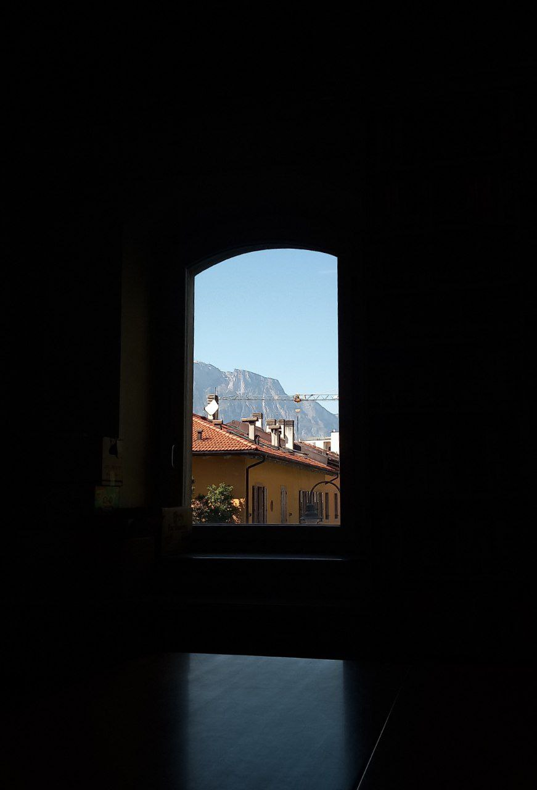
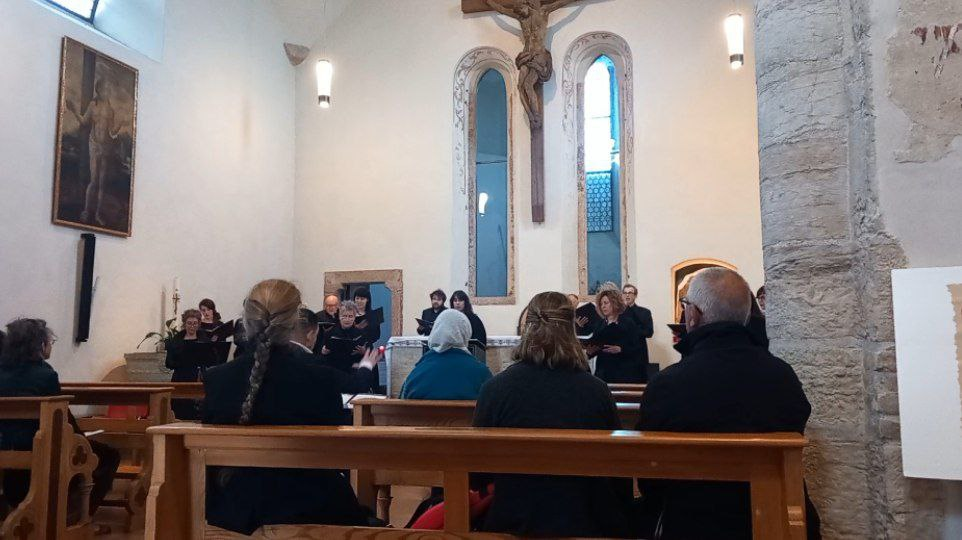

Giovanni's Diary > Chronological > Ephemeris >
2025-04-07
I want to record some updates on what I have been working on, so here they are.
In the last few days I spent some time into improving this website, both in presentation and in the content. More specifically, I added an interactive map in the Surrounding page using OpenStreetmap which is pretty cool. Further, I am generating a PDF book by translating the org files into latex and then to pdf, which still needs some work on the typography.
This weekend I went in Mount Celva which was a very enjoyable hike, visiting World War I fortresses close to the city, and I have written a new entry in Surroundings. I have to say that I am really enjoying writing this blog, I feel a slight sense of proudness even though I know there is so much to improve.
I am getting into history, perhaps inspired by the walk in the fortresses, so I started looking for ways to learn more. I concluded that the most fun way to learn history would be to read directly sources archived from the past, and trying to piece together the story of the places when I visit them, similar to trying to discover the lore of a videogame such as Dark Souls. You have no idea how much I like this gamification of history.
Thankfully, there are many preservation programs of old documents and everyday items from the past in my city, with even an online database (really unexpected from the public sector). I guess I will try to play the historian when I have the opportunity. I really value the effort people make to document history, I think it is a very important thing. I also started watching the documentary series Fall of Civilizations on youtube which I really enjoy, episodes are more that 3 hours long so it's a lot to enjoy.

Figure 1: At the historical museum's library
I listened to a choir singing in a local church. The songs were from the 12th or 13th century with some elements of instruments from the 14th centuty. Really fascinating, during those times the melody was secondary to the words and was slow and repeating, leaving for a contemplative feel. Churches were a natural echo chamber to power the sound of the voice. It also reminded me of the videogame Kingdome Come Deliveranche which I am following a gameplay of on youtube, I would play it if I had time and a decent computer.

Figure 2: Choir singing
I finished reading "Lunario Sentimentale" by Mauro Corona, it is a testimony to a past time that is now disappearing, therefore it is really valuable and it will keep living in the words of this book. I will write a page on this blog soon.
This week I didn't do any programming except some lisp for this website. On a sidenote, I don't feel really motivated lately so I am trying to switch things up and try new ideas.
One last thing, I want to open a section for photography on this website. I have hundreds of gigabytes of photos on various hardrives, I want to put some images here.